전자캐드기능사 (2004-07-18 기출문제)
1과목: 전기전자공학(대략구분)
1. 디지타이저의 설명으로 옳은 것은?
- 오직 CAD에서만 사용할 수 있다.
- CAD나 그래픽의 전용 입력장치이다.
- CAD 전용 출력장치이다.
- CAD 전용 마우스 패드를 말한다.
(정답률: 67%)

2. 프로그램이 수행되는 도중 잘못된 프로그램을 정정하는 작업을 나타내는 단어는?
- 코딩(CODING)
- 펀칭(PUNCHING)
- 리마크(REMARK)
- 디버깅(DEBUGGING)
(정답률: 77%)
3. 컴퓨터에서 프로그램 수행 중에 정전 등의 예기치 않은 사태가 발생했을 때 컴퓨터의 내부의 상태나 프로그램의 상태를 보존하기 위해 사용되는 것은?
- 인터럽트
- 서브루틴
- 스택
- 어드레싱
(정답률: 50%)
4. 다음 중 유도현상에 생기는 유도 기전력의 법칙으로 자속의 변화를 방해하려는 방향으로 발생하는 법칙은?
- 렌츠의 법칙
- 비오-사바아르의 법칙
- 패러데이의 법칙
- 플레밍의 오른손 법칙
(정답률: 66%)
5. 인쇄회로 기판 PCB 제조 공정에서 등사 원리를 이용하여 내산성 레지스터를 기판에 직접 인쇄하는 방법으로 양산성은 높으나 정밀도가 다소 떨어지는 공정법은?
- 사진 부식법
- 오프셋 인쇄법
- 빛 감광법
- 실크 스크린법
(정답률: 48%)
6. 10진수 20(10)을 2진수로 변환하면?
- 11110(2)
- 10101(2)
- 10100(2)
- 00001(2)
(정답률: 78%)
7. 저항 6[Ω],유도리액턴스 2[Ω],용량리액턴스 10[Ω]인 직렬회로의 임피던스의 크기는 ?
- 10[Ω]
- 13.4[Ω]
- 4.2[Ω]
- 3.7[Ω]
(정답률: 39%)
8. 전자 부품 중에 콘덴서를 작도하는 방법을 나타낸 것이다. 보기의 기호와 같이 그릴 때 A의 길이는 얼마로 하여야 하는가?
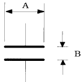
- A=3B
- A=4B
- A=5B
- A=6B
(정답률: 56%)
9. 어느 직류전원에 의하여 저항에 전류를 흘릴때 전원의 전압을 1.5배로하여 흐르는 전류가 1.2배가 되려면 저항값은 어떻게 하면 좋은가 ?
- 2배
- 2.5배
- 1.25배
- 4배
(정답률: 65%)
10. 도면의 기본 단위는?
- mm
- ㎝
- m
- ㎞
(정답률: 84%)
11. 그림과 같은 회로에서 전압 V와 전류 I 사이의 위상차 θ는 어떻게 표시되는가 ?
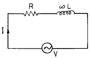
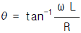
만큼 전압 V가 전류 I보다 앞선다.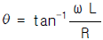
만큼 전압 V가 전류 I보다 뒤진다.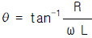
만큼 전압 V가 전류 I보다 앞선다.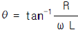
만큼 전압 V가 전류 I보다 뒤진다.
(정답률: 40%)
12. 500[W]의 전력을 소비하는 전열기를 10시간 동안 연속 하여 사용했을 때의 전력량 W는 얼마인가 ?
- 5[㎾h]
- 50[㎾h]
- 500[㎾h]
- 5000[㎾h]
(정답률: 57%)
13. 작업 진행 과정을 눈으로 바로 확인 가능한 장치는?
- 메모리
- 하드 디스크
- CPU
- 모니터
(정답률: 86%)
14. 도면을 작성할 때 실물보다 작게 그리는 척도는?
- 실척
- 현척
- 축척
- 배척
(정답률: 88%)
15. 전기. 전자. 통신에 대한 제도법은 어느 규정의 사용 방법을 따르는가?
- 전기용 기호(KSC0102)
- 옥내배선용 기호(KSC0301)
- 2값 논리소자 기호(KSX0201)
- 시퀀스 기호(KSC3016)
(정답률: 73%)
2과목: 전자계산기일반(대략구분)
16. 다음 심벌 중 가변콘덴서는?
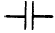
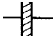
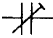
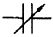
(정답률: 77%)
17. 2[㏝/m2]인 평등자기장과 직각방향으로 길이 50[㎝]의 도체에 전류 2[A]가 흐를때 발생되는 전자력은 ?
- F = 4[N]
- F = 3[N]
- F = 2[N]
- F = 1[N]
(정답률: 57%)
18. 회로도를 작성할 때 고려해야 할 사항 중 옳은 것은?
- 신호의 흐름은 도면의 오른쪽에서 왼쪽, 아래에서 위쪽으로 그린다.
- 주회로와 보조회로가 있을 경우에도 동등하게 좌우로 나누어서 그린다.
- 대칭으로 동작하는 회로는 접지를 기준으로 하여 대칭되게 그린다.
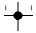
는 선과 선이 연결이 되지 않았음을 의미한다.
(정답률: 65%)
19. 누산기(Accumulator)에 대한 가장 옳은 설명은?
- 논리 연산만을 수행한다.
- 연산 결과를 해석하는 곳이다.
- 산술 및 논리 연산을 수행한다.
- 연산 결과를 일시적으로 보관하는 레지스터의 일종이다.
(정답률: 70%)
20. 다음 기호의 명칭으로 옳은 것은?
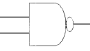
- OR-GATE
- NAND-GATE
- AND-GATE
- NOR-GATE
(정답률: 86%)
21. 제도 용지에서 A3 용지의 규격으로 옳은 것은? (단, 단위는 mm)
- 210 × 297
- 297 × 420
- 420 × 594
- 594 × 841
(정답률: 74%)
22. 저항의 색띠가 1색:주황색, 2색:검은색, 3색:갈색 일때 저항 값은?
- 300Ω
- 230Ω
- 30㏀
- 23㏀
(정답률: 73%)
23. 우리 나라 산업의 여러 부문에 따른 KS의 부문별 기호 중 전기 분야를 나타낸 것은?
- KSA
- KSB
- KSC
- KSD
(정답률: 80%)
24. Hardware적 원인에 의한 인터럽트가 아닌 것은?
- 외부신호 인터럽트
- 기계착오 인터럽트
- 입ㆍ출력 인터럽트
- SVC 인터럽트
(정답률: 36%)
25. CAD 시스템에서 회로도는 단순한 부품의 접속이 아니라 전자 회로에서의 규칙이 매우 중요하다. 다음 중 전자 회로에서의 검사 항목으로 보기 힘든 것은?
- 회로의 오배선
- 입ㆍ출력 신호의 접속관계
- 전원의 극성
- 신호선의 길이
(정답률: 66%)
26. Layout에서 Zoom in의 설명으로 적합한 것은?
- 보드상의 선택 영역을 확대한다.
- 보드상의 선택 영역을 축소한다.
- 보드상의 모든 객체를 보여준다.
- 보드상의 일부 객체를 보여준다
(정답률: 79%)
27. 컴퓨터 제도(CAD) 시스템에 사용되는 입력장치가 아닌 것은?
- 마우스(Mouse)
- 트랙볼(Trackball)
- 펜플로터(Penplotter)
- 디지타이저(Digitizer)
(정답률: 55%)
28. 인쇄회로기판(PCB)의 장점 중 옳지 않은 것은?
- 대량 생산의 효과가 높다.
- 오 배선의 우려가 없다.
- 소형 경량화에 기여한다.
- 소량 다품종 생산의 경우 제조 단가가 낮아진다.
(정답률: 71%)
29. 부품의 단자 또는 도체 상호간을 접속하기 위해 구멍의 주위에 만든 특정한 도체 부분인 것은 ?
- 리드
- 납마스크
- 패턴
- 랜드
(정답률: 58%)
30. 송신기에서 고음을 강조해주고 수신측에서는 이 고음을 송신측에서 높인 만큼 억제시켜 고음에서의 S/N 저하를 막고 있는데 이 때 FM수신기에서 사용되는 회로는?
- 프리엠파시스 회로
- 디엠파시스 회로
- 고주파 증폭회로
- 저주파 증폭기
(정답률: 29%)
3과목: 전자제도(CAD) 이론(대략구분)
31. 일정진폭, 일정 주파수로 전기 진동을 계속하여 신호를 발생하는 현상은?
- 발진
- 재생
- 증폭
- 궤환
(정답률: 64%)
32. 컴퓨터의 용량 1Mbyte를 이론적으로 나타낸 것은?
- 1000000byte
- 1024000byte
- 1038576byte
- 1048576byte
(정답률: 33%)
33. 비수치적 연산 중에서 필요없는 일부의 bit 혹은 문자를 지워 버리고, 나머지 bit나 문자들만을 가지고 처리하기 위하여 사용되는 연산자는?
- OR
- EOR
- AND
- NOT
(정답률: 45%)
34. 변압기의 원리는 어느 현상(법칙)을 이용한 것인가 ?
- 오옴의 법칙
- 전자 유도 원리
- 공진 현상
- 키르히호프의 법칙
(정답률: 54%)
35. "평형변조방식은 ( )를 제거하고 측파대만을 꺼내어 변조하는 방식이다." 에서 ( )안에 알맞는 방식은 ?
- 상측파대
- 하측파대
- 반송파
- 변조파
(정답률: 51%)
36. P형 반도체와 N형 반도체의 접합 양단에 순방향 바이어스를 인가했을 때 설명중 옳지 않은 것은?
- P형 반도체에 (+)전압을, N형 반도체에 (-)전압을 인가한다.
- 전류는 N형 반도체에서 P형 반도체측으로 흐른다.
- P형 반도체의 다수 반송자는 정공이며, 소수 반송자는 전자이다.
- P형 및 N형 반도체 측의 다수 반송자는 대부분 접합면을 통과한다.
(정답률: 49%)
37. 인쇄회로기판(PCB)의 제조 공정 중 비스루홀 도금 인쇄 배선판을 사용한 제조 공정 순서가 올바르게 된 것은?
- 동장 적층판→ 패턴→ 에칭→ 천공→ 기호인쇄
- 동장 적층판→ 에칭→ 패턴→ 천공→ 기호인쇄
- 패턴→ 동장 적층판→ 에칭→ 천공→ 기호인쇄
- 패턴→ 동장 적층판→ 천공→ 에칭→ 기호인쇄
(정답률: 50%)
38. 다음 전자 CAD용 프로그램(EDA 툴)이 아닌 것은?
- OrCAD
- CADSTAR
- PCAD
- AutoCAD
(정답률: 65%)
39. 두 도체로 된 전극 또는 금속편 사이에 각종 유전 물질을 채운 부품은?
- 코일
- 콘덴서
- 저항
- 다이오드
(정답률: 60%)
40. 납 축전지의 전해액은?
- KOH
- NaCl
- CUSO4
- H2SO4
(정답률: 36%)
41. 전하가 방전되는 것을 보충하기 위한 리프레시 작업이 필요한 기억 소자는?
- mask ROM
- EPROM
- SRAM
- DRAM
(정답률: 57%)
42. 다음중 CAD에서 수치의 직접입력이 곤란한 부분은?
- PCB 외형 치수
- PCB 외형 모서리각도
- PCB 외형의 원호
- PCB Machine hole 지름
(정답률: 38%)
43. CAD 활용시의 특징이 아닌 것은?
- 수 작업에 의존하던 디자인의 자동화가 이루어진다.
- 정확하고 효율적인 작업으로 개발 기간이 단축된다.
- 신제품 개발에 적극적으로 대처할 수 있다.
- 보다 많은 인력과 시간이 소요된다.
(정답률: 83%)
44. 기억된 프로그램의 명령을 하나씩 읽고 해독하여 각 장치에 필요한 지시를 하는 기능은?
- 기억 기능
- 연산 기능
- 제어 기능
- 입ㆍ출력 기능
(정답률: 67%)
45. 전자ㆍ통신용 기기의 부품 배치도를 그릴 때 고려하여야 할 사항 중 옳지 않은 것은?
- IC의 경우 1번 핀의 위치를 반드시 표시한다.
- PCB 기판의 점퍼선은 표시하지 않는다.
- 부품 상호간의 신호가 유도되지 않도록 한다.
- 부품의 종류, 기호, 용량, 핀의 위치, 극성 등을 표시하여야 한다.
(정답률: 71%)
46. 발진 조건을 만족하려면 어떻게 하면 좋은가 ?
- 정궤환을 해야 함
- 부궤환을 해야 함
- 컬렉터 폴로어를 사용함
- 그리드 리이크 저항을 줄여야 함
(정답률: 35%)
47. 저항값이 낮은 저항기로서 대전력용 및 표준저항기 등과 같이 고정밀도 저항기로 사용되는 저항기는?
- 탄소피막 저항기
- 솔리드 저항기
- 모듈 저항기
- 권선 저항기
(정답률: 63%)
48. 트랜지스터 회로의 h 정수를 표현한 것중 틀린 것은? (단, V1 = 입력전압, V2 = 출력전압, i1 = 입력전류, i2 = 출력전류)
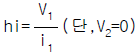
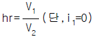
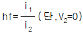
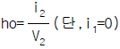
(정답률: 33%)
49. 다음 순서도 기호 중 산술연산, 데이터의 이동, 편집등의 처리(Process) 과정을 나타내는 것은?
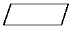
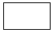
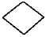
(정답률: 44%)
50. ISO의 규격 명칭으로 옳은 것은?
- 한국산업규격
- 국제표준화기구
- 영국규격
- 프랑스규격
(정답률: 83%)
51. 전자 부품 선정 시 고려 사항이 아닌 것은?
- 온도특성
- 외형 치수
- 사용 유효기간
- 주파수 특성
(정답률: 59%)
52. 전자제도에서 정격과 특성을 표시할 때는 KS C 0806의 규정에 의하여 표시된다. 다음은 전자제도에서 정격 표시의 문자 기호와 의미가 옳지 못한 것은?
- A=1
- B=1.25
- C=1.6
- D=2.5
(정답률: 34%)
53. 다음 스위치 회로를 불 대수로 표현하면?
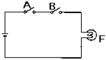
- F=A+B
- F=AㆍB'
- F=AㆍB
- F=A'ㆍB
(정답률: 62%)
54. PCB의 일반적인 특징 중 옳지 않은 것은?
- 대량 생산의 효과가 높다.
- 오배선의 우려가 없다.
- 생산단가가 높다.
- 소형 경량화에 기여한다.
(정답률: 67%)
55. CAD시스템에 의한 제품 설계 및 도면작성의 결과로 볼 수 없는 것은?
- 설계 과정의 능률 향상에 의한 도면의 품질 향상
- 수치 계산 결과의 정확성 증가
- 설계 요소의 표준화로 원가 절감
- 도면 형상의 자유로운 표현
(정답률: 62%)
56. B급 푸쉬풀 전력증폭 회로의 최대 컬렉터 효율은 ?
- 100[%]
- 82.5[%]
- 78.5[%]
- 50.0[%]
(정답률: 59%)
57. 인쇄 회로 기판(PCB) 설계용 CAD에서 일반적인 배선 알고리즘이 아닌 것은?
- 스트립 접속법
- 고속 라인법
- 기하학적 탐사법
- 인공지능 탐사법
(정답률: 61%)
58. 프로그램에서 자주 반복하여 사용되는 부분을 별도로 작성한 후 그 루틴이 필요할 때마다 호출하여 사용하는 것으로, 개방된 서브루틴이라고도 하는 것은?
- 매크로
- 레지스터
- 어셈블러
- 인터럽트
(정답률: 62%)
59. 전자제도에서 정격과 특성을 표시할 때는 KS C 0806의 규정에 의하여 표시된다. 다음은 전자제도에서 색과 숫자의 관계를 표시하였다. 올바르지 못한 것은?
- 검정색=0
- 주황색=3
- 녹 색=5
- 흰 색=7
(정답률: 77%)
60. 반도체 소자 중 전압의 크기에 따라 저항 값이 변하는 소자는?
- 배리스터
- 서미스터
- 트랜지스터
- 다이오드
(정답률: 59%)